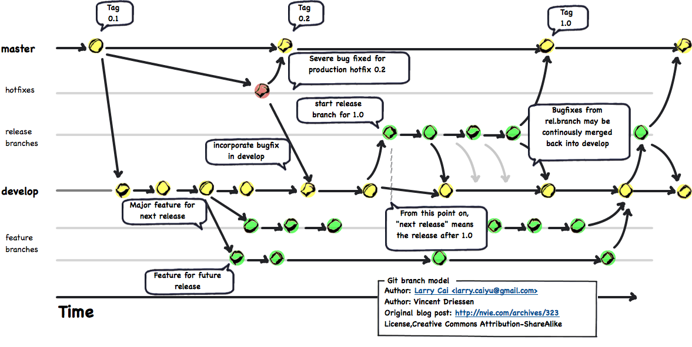
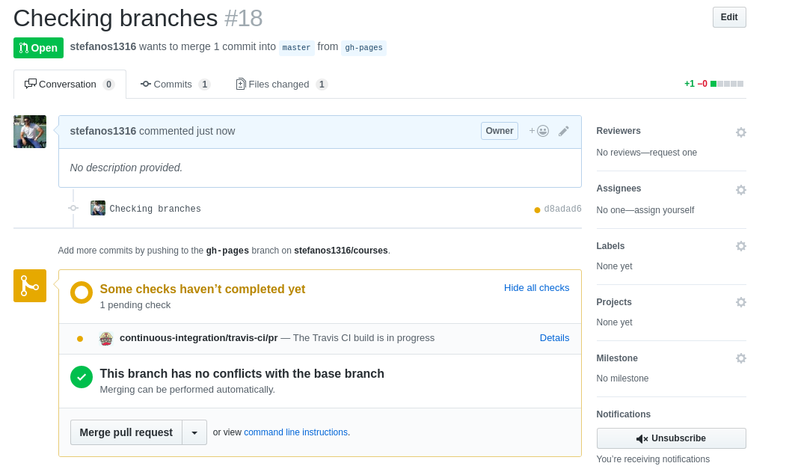
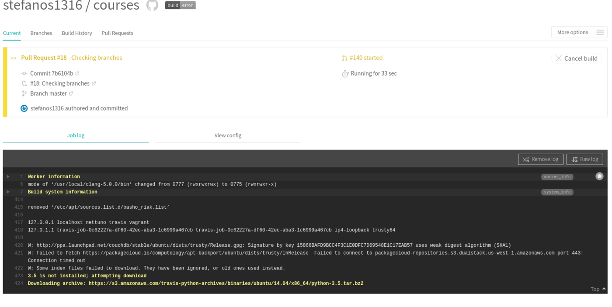
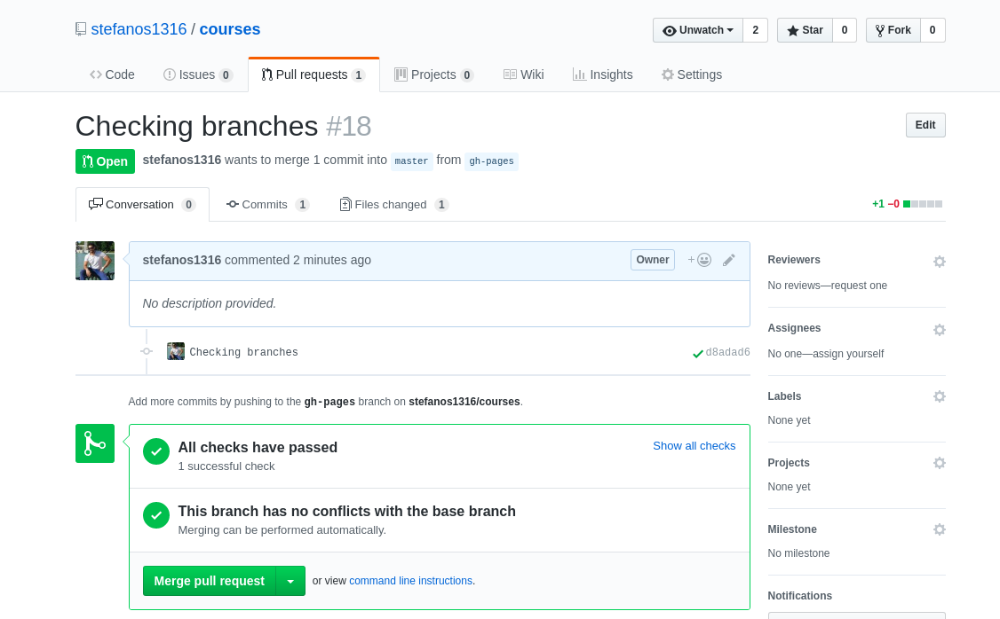
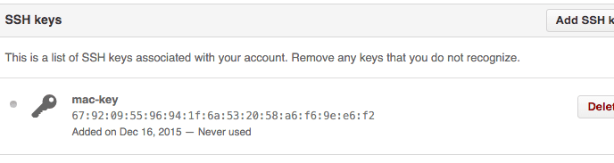

Προγραμματισμός ΙΙ: Travis CI with CV template tutorial


Agenda
- Importance of Continuous Integration
- About Travis CI
- Getting started
- .travis.yml
- Auto-deploying gh-pages with Travis
Importance of CI (1)
- Continuous Integration is a software development practice where members of a team integrate their work frequently.
- Each integration is verified by an automated build (including test) to detect integration errors as quickly as possible.
- Many teams find that this approach leads to significantly reduced integration problems and allows a team to develop cohesive software more rapidly.
Importance of CI (2)

Importance of CI (3)

Travis CI
About Travis CI
- Is a distributed continuous integration service purposing on building and testing software projects hosted at GitHub.
- Is using cloud infrastructure to host, build, and test various projects.
- The testing service for private repositories is fee basis while free of charge for public.
- TravisPro offers custom deployments on customer's own hardware.
- Sends email reports regrading the building status (fail, error, passed) after a pull request or merge operation.
- Auto-testing on multiple environments (language versions, jdks, and so on).
Getting started

.travis.yml
- Define all dependencies, programming languages, packages, etc.
- Define specific versions and installations.
- Define scripts to execute.
.travis.yml example
language: python
python:
- '3.5'
language: java
- oraclejdk8
sudo: required
dist: trusty
install:
- pip install "notebook==4.1" requests jupyter_cms jupyter_dashboards
addons:
apt_packages:
- pandoc
script:
- python test1.py
- mvn clean install
Building Environments
| Infrastructure |
VM GCE |
Cont.EC2 |
VM GCE |
VM |
| .travis.yml |
sudo: required dist: precise |
sudo: false dist: trusty |
sudo: required dist: trusty |
os: osx |
| Boot time(s) |
20-50 |
1-6 |
20-50 |
60-90 |
| OS version |
12.04 |
14.04 |
14.04 |
OSX |
| Memory GB |
7.5 |
4 |
7.5 |
4 |
| Cores |
~2, bursted |
2 |
~2, bursted |
2 |
Pushing a PR on GitHub (1)

Building/Testing on Travis (2)

Passed from Travis (3)

Auto-deploying workflow

Auto-deploying gh-pages with Travis (Linux distros)
- Set GitHub Pages option on a repository
- Enable Travis webhook on the above repository
- Create .travis.yml settings file
- Generate SSH key and encrypt private key
- Store Public Key on GitHub
- Modify Scripts
- Push to GitHub and experience the magic
Set GitHub Pages option on a repository
- Fork our repository found under this link
Enable Travis webhook
Create .travis.yml settings file.
language: python
python:
- '3.5'
sudo: required
dist: trusty
install:
- sudo apt-get install texlive-xetex texlive-latex-recommended texlive-latex-extra texlive-fonts-recommended texlive-context
- pip install "notebook==4.1" requests jupyter_cms jupyter_dashboards
addons:
apt_packages:
- pandoc
script: bash tools/travis-deploy.sh
env:
global:
- ENCRYPTION_LABEL: b88dab5c5665
- COMMIT_AUTHOR_EMAIL: stefanos1316@gmail.com
Generate SSH key and encrypt the private key (1)
Generate SSH key and encrypt the private key (2)
Encrypt private key (inside the root directory and DON'T use passphrase)
$ travis encrypt-file ~/.ssh/deploy_key
- Inside the tools/travis_deploy.sh file replace the existing with the new encryption label (openssl...)
Replace the ENCRYPTION_LABEL's value, from .travis.yml, with the generated label from the encrypt-file command.
Add Pub Key on GitHub (1)
- On GitHub interface select Settings then:

Add Pub Key on GitHub (2)

Add Pub Key on GitHub (3)
First setup remote.origin.url using
$ git config remote.origin.url git+ssh://git@github.com/youriserid/repoid.git
To see all git config values and validate if remote.origin.url has been set
$ git config -l
Test that you can ssh to GitHub
$ ssh -T git@github.com
Scripts
- Deploy travis script can be found in this link.
- Build script is the script that creates our webpages content.
- Make some changes on the materials found under the makrdown/index.md directory
- Change the link in README.md (link it with your own repository) also and try to push on your repository.
Push to GitHub and experience the magic
- In repo's settings set GitHub Pages' source to gh-pages branch (be patient it takes some time)
- In case you would like index page to change from default (README) add and index.html.
- Access your webpage using the following pattern https://_UserName_.github.io/_Repository'sName_/index.html
- This might take some time until travis is done with the build process.
Thank you for your attention!!!

This work is licensed under a Creative Commons Attribution-NonCommercial-ShareAlike 4.0 International License.